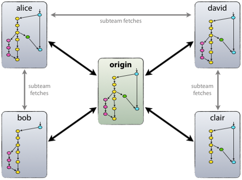

Kesako?
Git a été créé par Linus Torvald (créateur de Linux) en avril 2005 pour proposer une alternative gratuite à BitKeeper.
C’est un gestionnaire de version décentralisé. Cette gestion décentralisé lui a valu son succès, notamment auprès de la communauté du logiciel libre.
Git a été pensé comme un système de fichier à part entière qui gère lui-même le versionnement de son arborescence (d’après Linus Torvald).
Décentralisé
Git est un gestionnaire de version décentralisé. Chaque à contributeur possède donc localement un dépôt à part entière!
Chaque dépôt est totalement indépendant des autres. Les synchronisations entre dépôts sont à décider suivant vos méthodes de travail.
Décentralisé
De manière générale, on travaille avec un dépôt central qui sert de maitre de la donnée. Ce dépôt est traditionellement appelé origin. Chacun des poste client récupére et synchronise ses sources avec origin.
La gestion de fichiers
Git indexe les fichiers d'après leur somme de contrôle calculée avec la fonction de hachage SHA-1. Quand un fichier n'est pas modifié, la somme de contrôle ne change pas et le fichier n'est stocké qu'une seule fois. En revanche, si le fichier est modifié, les deux versions sont stockées sur le disque.
- Untracked: Le fichiers n’est pas indexé, et n’est pas considéré pour le calcul des différences entre deux révisions
- Stagged: Le fichier fait parti d’un lot prêt à être commité
- Unmodified: Le fichier est indexé, mais ne possède aucune différence avec sa version de la révision précédente
- Modified: Le fichier est indexé, et possède des différences avec sa version dans la révision précédente
Ignorer des fichiers
Il est possible de faire en sorte que des fichiers présent dans votre répertoire soit ignorés par Git. Il suffit de placer les repertoires/fichiers à ignorer dans le .gitignore
lib/
plugin/
js/
css/
node_modules/
L'historique
L'historique de git est créé comme une chaine de pointeurs entre les différentes révisions (commits) du projet
Le Commit
Un commit est une révision du projet. Le snapshot du projet à l’instant T où le commit a été créé. Il est identifié par son SHA-1 et contient les informations suivante:
- Auteur
- Date du commit
- Message de commit
- Contenu arborescent de la révision
- Lien vers le ou les commits parents
Exemple
Créer un dépôt Git
Git Init
git initTransforme le dossier courant en dépôt git.git init __directory__ Transforme le dossier __directory__ en dépôt git.git init [--bare]Un repository bare est un repository dans lequel on ne peut rien commiter directement. On ne peut que synchroniser avec d'autre dépôt.
Note: Si vous faites un git init dans un repertoire étant déjà un depôt git. Rien ne se passe. Vous n'écraserez pas votre configuration.
Git clone
Cette commande vous permez de cloner un dépôt existant (distant ou non). Un dossier portant le nom du projet est créé dans le répertoire courant, et le dépôt est copié dans ce dossier.
git clone __url__git clone https://github.com/Tsj-/formation-git.gitPar exemple si vous voulez contribuer à l'amélioration de cette formation, vous pouvez copier le dépôtet commencer à coder =)Git config
Permet de régler les configurations du compte git. Il est possible de gérer une hierarchie des configuration:
- system
- global
- local
git config --global user.name "Thibault Ingargiola"git config user.email "thibault.i@email.com"git config --global http.proxy "http://172.20.0.9"Les alias
Il est possible de se créer des alias pour simplifier l'utilisation de certaines commandes complexes
git config --global alias.ci commitgit config --global alias.amend git ci --amendAinsi la commandegit amend
devient equivalente à:git commit --amend
git config --list
core.symlinks=false
core.autocrlf=true
core.fscache=true
color.diff=auto
color.status=auto
color.branch=auto
color.interactive=true
help.format=html
http.sslcainfo=C:/Program Files/Git/mingw64/ssl/certs/ca-bundle.crt
diff.astextplain.textconv=astextplain
rebase.autosquash=true
filter.lfs.clean=git-lfs clean -- %f
filter.lfs.smudge=git-lfs smudge -- %f
filter.lfs.required=true
filter.lfs.process=git-lfs filter-process
credential.helper=manager
user.name=Thibault Ingargiola
user.email=thibaultingargiola@gmail.com
alias.cb=checkout
credential.helper=wincred
url.https://.insteadof=git://
core.bare=false
core.repositoryformatversion=0
core.filemode=false
core.symlinks=false
core.ignorecase=true
core.logallrefupdates=true
remote.origin.url=https://github.com/Tsj-/formation-git.git
remote.origin.fetch=+refs/heads/*:refs/remotes/origin/*
branch.master.remote=origin
branch.master.merge=refs/heads/master
Modifier des éléments
Git add
Cette fonction sert à passer des nouveaux fichiers, ou des fichiers modifiés à l'état staged afin qu'ils puissent par la suite être commités.
git add __file__git add __directory__git add ./src/*.jsLa phase de stagging est une particularité propre à Git. Ce buffer entre la phase de travail, et la phase d'historisation permet de morceler notre historique afin de rendre les commits les plus atomiques possible.
Git commit
Cette commande sauvegarde l'ensemble des modifications dans l'état staged etl'ajoute à l'historique du projet.
git commit -m "__message_de_commit__"Une fois nos modifications commitées, Git ne les oubliera jamais. Il est bien sur possible de modifier l'historique, mais là encore il existe des possibilité pour retrouver nos modifications.
Attention! Ceci n'a rien à voir avec la fonction commit de SVN. Ici l'historisation n'est faite que sur votre depôt local. La synchronisation avec un serveur central se fait séparément.
Revenir en arrière
Git commit --amend
git commit --amendApporte les nouvelle modifications à l'ancien commit.git commit --amend -m "Update README.txt"Applique les modification à l'ancien commit, et change le message de commit en "Update README.txt".Attention: on modifie l'historique en faisant cela. Le --amend n'est utilisé que lorsque les modification ne sont pas synchronisée avec le serveur.
Git reset
Vous permez de revenir à l'état de n'importe quel commit. Efface les liens des commits concernés.
git reset HEAD^Revient au commit précédent. En gardant l'ensemble des modifications dans l'état modifiedgit reset HEAD~3 --hardRevient trois commit en arrière en effaçant l'ensemble des modifications.git reset origin/master --hardRevient à l'état dans lequel est la branch sur le dépôt origin.Le HEAD
Il s'agit de votre emplacement actuel dans l'arbre d'historique
C'est un tag particulier qui pointe vers le commit. On retrouvera cette notion pour les branches
Les Branches
Il s'agit de la grande puissance de Git! Rendre les branches plus facile d'utilisation pour s'adapter à n'importe quelle méthode de travail.
Git branch
Pour Git, une branche n'est qu'une chaine de commit pointant chacun sur son parent!
git branch ma-nouvelle-featureCrée une nouvelle branche appelée ma-nouvelle-featureUne branche est représentée dans Git par un tag pointant vers le derniers commit de la branch.
Les deux branches peuvent maintenant évoluer indépendament l'une de l'autre.
Git checkout
Cette commande sert à naviguer (déplacer le HEAD) dans l'arbre d'historique. De cette manière vous remplacer votre arborescence de fichier par l'état dans lequel il était au moment du commit choisi.
git checkout 6b2488git checkout masterVous pouvez identifier un commit juste avec le début de son SHA-1. S'il n'y a pas d'ambiguïté, Git comprendra naturellement de quel commit il s'agit.
Git stash
Le stash est utile pour stocker temporairement des modifications.
git stashPrend l'ensemble de vos modifications en attente, et les place dans le stash.git stash popVide le stash, et applique les modification qu'il contenait.git stash dropVide le stash sans appliquer les modifications.Si vous avez des modifications en cours que vous ne voulez pas commiter, mais que vous voulez tout de même mettre à jour votre branche avec le serveur, le stash est la solution ;)
Synchronisation
Git pull
Cette commande sert à récupérer les commit sur origin pour mettre à jour notre dépôt local
git pullRécupère et merge les commits de la branche serveur correspondant à notre branche locale.git pull origin masterRécupère et fusionne les commit de la branche master sur origin à notre branche locale.La commande git pull est une contraction des deux commande git fetch et git merge. Dans la plupart des cas (et aussi pour éviter des commit de merge inutiles) on préfèrera utiliser la commande suivante:
git pull --rebasegit config --global pull.rebase trueTous vos pull seront des pull --rebase ;)
Git push
Cette commande sert à pousser nos modifications locales sur une branche serveur
git pushPousse les commits locaux sur la branche serveur configurée pour notre branche localegit push origin masterPousse les commits locaux sur la branche master sur le dépôt originSi vous avez des modifications en attente, ou si vous n'êtes pas à jour avec le serveur, Git refusera de pusher!
Git merge
Fusionne les modifications d'une branche sur une autre
git merge ma-nouvelle-featureMerge la branche ma-nouvelle-feautre sur la branche couranteGit rebase
Réaplique les commits sur le commit sélectionné
git rebase masterRebase la branche courante sur masterAttention, on réécrit l'historique. Donc les SHA-1 des commits changent
Git au quotidien
Les logiciels de dépôt
Ils permettent de gérer efficacemùent un dépôt. Sécuriser certaine branches, mettre en place des builds automatiques, des workflows particuliers...
Les clients graphiques
Indispensable à une utilisation efficaces de Git. On evite les erreurs, on comprend et donc maitrise ce que l'on fait.
Workflows
Pour une organisation du travail efficace et qualitative!
Workflow centralisé
Flow mono-branche. Seule la master est présente, chaque personne doit pusher des versions stables de l'application.
Flow le plus utilisé à l'heure actuelle chez Klee. Simple, léger, efficace. Pas de garde fou ni de modularité.
Feature branching
Flow multi-branches. Une branche principale servant à l'integration des fonctionnalités (souvent appelée develop). Puis une branche par fonctionnalité basé sur développe.
L'idée de ce flow est de séparer les concepts métier en story utilisateurs. Il permet une plus grande modularité et une meilleure maitrise dans la façon de travailler.
Souvent couplé avec la méthodologie Kanban. Possibilité de forcer la relecture de code avant intégration via pull request
Travaille supplémentaire à l'intégration d'une feature.